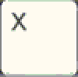
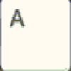
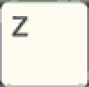

Le frecce sono usate per muovere il personaggio scelto nelle rispettive direzioni

Il tasto X è usato per aprire un menu in cui potrai fare alcune operazioni, come la gestione dei tuoi pokemon o del tuo zaino

Il tasto A è usato principalmente per avanzare nei discorsi fra personaggi. Tuttavia è usato per anche per selezionare le mosse durante la battaglia o la caratteristiche del gioco.

Il tasto Z è usato per tornare indietro dalle pagine secondarie.